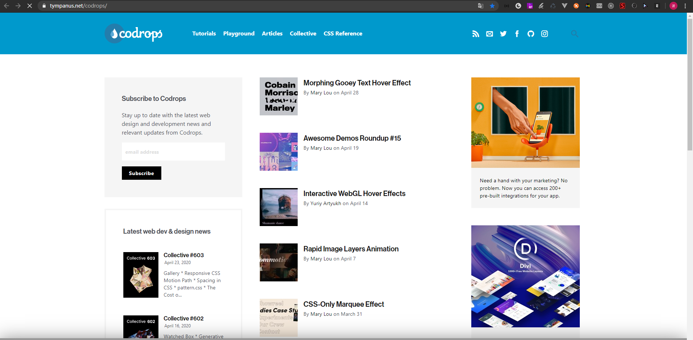

GitHub 精选前端项目
最新更新
codepen 一个在线编辑前端项目的网站，其中有一些前端大神的作品，也有很多令人惊艳的前端效果，可以浏览和下载使用。
codrops 一系列具有相当具有创意且有趣的前端效果的集合，是非常棒的学习资料，可以欣赏和下载使用。并且有些项目，也托管到了github仓库中

docschina 印记中文网收集了由社区翻译的比较流行的前端相关框架、工具的中文版文档。为学习一些新的框架扫平了语言障碍。
toby 超级赞的收集与协作管理书签的chrome插件，前端开发应该都会用chrome。全球超过10W+的用户。
microjs 可以让你选择微型的js类库的网站，该网站里的库都是压缩后不大于5KB的，非常实用，该网站的资源都托管到了github。
plainjs 该仓库都是用原生js写的插件和组件，非常实用，该网站的资源都托管到了github。
目录
综合/资源
面试相关
样式/UI/css
构建工具/预编译
测试/工具
canvas/数据可视化
动画插件框架、库和组件
移动端
Node.js相关
模板引擎
WEB编辑器
React相关
编程软实力
浏览器兼容方案
综合/资源
- frontend-dev-bookmarks 一个巨大的前端开发资源清单 star: 24705
- Awsome-Front-End-learning-resource github最全的前端资源汇总仓库 star: 4158
- mobile-web-favorites 移动端H5开发经验、资源、以及踩坑汇总 star: 1307
- Front-end-tutorial 最全的资源教程-前端涉及的所有知识体系 star: 3667
- awesome-javascript 一系列很棒的javascript库、插件、资源 star: 15222
- front-end-collect 作者分享自己长期关注的前端开发相关的优秀网站、博客、以及活跃开发者 star: 3877
- javascript airbnb出品写js最佳的姿势，已成众多公司js代码风格的标准 star: 75330
- Mars 腾讯移动web前端知识库 star: 7278
- awesome-wechat-weapp 小程序开发资源汇总，应有尽有 star: 17357
- gold-miner 掘金翻译计划，可能是世界最大最好的英译中技术社区，最懂读者和译者的翻译平台 star: 15949 view
- Blog 前端大牛的博文，优质文章 star: 7146
- Best-App 收集&推荐优秀的 Apps/硬件/技巧/周边等（与前端无关） star: 11578
面试相关
- FE-interview 收集的前端面试题和答案 star: 3722
- resources 知名互联网企业内推，需要换工作的小伙伴擦亮眼睛了 star: 1644
- CS-Interview-Knowledge-Map 一份前端面试资源，作者很用心，还配有专门的网页 star: 10690 view
- node-interview 如何进入饿了么前端团队，node面试题集合 star: 7274 view
样式/UI/css
- materialize materialize 是material design一套轻量级的纯CSS框架。material design 是Goole提出的一套UI设计方案，并应Goole用于所有产品中 star: 33784 view
- Semantic-UI 让你使用任何html标签 来表现ui控件，这是一款语义化设计的前端框架，为攻城师而制作的可复用的开源前端框架 star: 42654
- uikit 一个轻量级的、模块化前端框架，它被用于快速开发强大的web界面。也是一款优秀的响应式html5框架 star: 13018
- primer github站点所使用的一套css框架 star: 7567
- weui 为微信web服务量身设计的一套ui框架 star: 19880
- pure 一组很小的，响应式的css组件，你可以在网页的项目上到处使用 star: 18978
- normalize.css 一个可定制的css文件，使浏览器呈现的所有元素，更一致和符合现代标准。支持IE8+ star: 32195
- iCSS 一系列css有趣的话题，有开发中常用css代码gists star: 3807
- css-doodle 一个用css绘制图形的web组件。非常酷！请看demo作品 star: 1201 view
构建工具/预编译
- parcel 一个零配置的新一代前端构建工具，识别各种常用类型文件，最优加载模块，代码拆包等，非常值得尝试的一款打包工具 recommand star: 26158
- webpack 一个模块打包工具，你可以使用webpack管理你的模块依赖，并编绎输出模块们所需的静态文件 recommand star: 43589
- gulp 基于node.js流构建系统，只有原生几个api，和庞大的插件生态，使用非常简单 star: 30196
- yo 基于node的一个强健的项目脚手架工具，可以非常方便的构建一个初始项目，有各种类型的项目的脚手架 star: 2598 view
- TypeScript 有类型的js预编译语言，非常强大的预编译与代码报错提示，赋予了JS构建大型项目的可能 recommand star: 38380 view
- babel 是一款为了写下一代js的编译器，无需等待浏览器支持就可以使用各种ES6，ES7新的语法 recommand star: 29302
- stylus 富有表现力的，健壮的css预编译语言, 除了代码简洁，可读性强外，函数功能非常强大，可与js混合使用，实现动态css编程 recommand star: 9404
- less.js 轻量级的，动态CSS预编语言，具有CSS所有特性，并提供了动态编程方式编写CSS代码。也是各大UI框架所选用的样式语言，比如bootstrap,ant design等 star: 15698
- node-sass 动态CSS预编语言, 并有拥有强大sass compass的生态圈，可以直接引入并使用，sass是由ruby编写的，node-sass是node重构版本，方便npm直接使用 star: 5445
- postcss 用js插件来对css样式文件，进行转换、预编译等操作，并且实现了模块化，支持非常多插架 recommand star: 19215
测试/工具
- mocha 一个简单、灵活有趣的 javascript 测试框架，用于 nodejs 和浏览器上的 js 应用测试 star: 16125
- casperjs 一个基于 phantomjs 的开源导航脚本和测试工具 star: 7242
- karma 自动化完成单元测试，允许你在多个浏览器里执行js代码。让你的 tdd 变得简单，快速，有趣 star: 10128
- jasmine 是一个简易的 js 单元测试框架， 用来测试 javascript 代码 star: 13800
- chai 一个针对 nodejs 和浏览器的 tdd (测试驱动开发)/ bdd(行为驱动开发)的断言框架，可与任何 javascript 测试框架集成 recommand star: 5664
- csscss css代码冗余分析工具，用于分析css存在的冗余 star: 2938
- async 一个工具模块，提供了直接而强大的 javascript 异步功能。虽然是为 nodejs 设计的，但是它也可以直接在浏览器中使用 star: 24543
- HTMLHint html 静态代码分析工具，可以集成到代码编辑器或编译系统中 star: 1955
- eslint js 静态代码分析工具，可以帮你检测 js 语法错误和潜在的问题，可以集成到代码编辑器或编译系统中 recommand star: 12222
- stylelint 分析和优化你的css样式表的工具，支持多种类型的css文件 recommand star: 5318
- stylint 由于 stylus 官方团队并没有实现 .styl 文件检查工具，第三方实现了sytlus文件的代码风格检查工具 star: 296
- headroom.js 是强大的基准测试库，几乎适用于所有js平台。支持high-resolution定时器，并返回重要的统计结果 star: 9905
- Vorlonjs 远程调试移动端页面的工具，有和PC页面调试一致的体验。比如native app内嵌h5页面、手机h5页面等。国内也一个相同功能的软件moblie debug。star: 2666 view
canvas/数据可视化
- d3 一个基于数据操作文档的js数据可视化框架，最流行的数据可视化库之一 star: 78354
- incubator-echarts 基于canvas的纯js图表库，提供直观，生动，可交互，可个性化定制的数据可视化图表 star: 29730
- Chart.js 使用canvas标签的简易html5图表 star: 39063
- c3 一个基于 d3.js 的可重用 javascript 图表库，几乎零学习曲线 star: 7921
- g2 是一套基于可视化编码的图形语法，以数据驱动，具有高度的易用性和扩展性，可定制的颗粒度极细，相比项目echart大而全且易用的图表库，这个库会让你有不一样的体验，且官方提供了g2-react的react封装包 star: 5838
- sketch.js 跨平台javascript创意编码框架，gzip压缩后仅有2kb star: 3211
- zrender 一个轻量级的canvas类库，mvc封装，数据驱动，提供类dom事件模型，让canvas绘图大有不同 star: 3098
- highcharts 基于svg的javascript图表框架 star: 7900
- g6 是一个由纯 JavaScript 编写的关系图基础技术框架。开发者能基于 G6 进行关系图的分析视图和编辑视图进行快速的二次开发 star: 2795
动画
- animate.css 一个跨浏览器的css动画库，实现了多种css3动画效果，简单易用易上手 star: 53850
- anime 极小的js动画引擎，支持 css3、svg 的动画效果，能编写出各种复杂动画效果，gzip后6K左右 star: 23042
- move.js 极小的js库,支持css3的动画效果,非常简单优雅 star: 4370
TweenJS 是一个简单但强大的js动画库，createjs 套件的一部分 star: 2760 - bounce.js 一个用于制作漂亮的css3关键帧动画的js库，使用其特有的方式生成的动画效果 star: 5650
- tween.js 一款可生成平滑动画效果的js动画库，允许你以平滑的方式修改元素的属性值，它可以通过设置生成各种类似css3的动画效果 star: 5764
- parallax 轻量级的的视差引擎，能对智能设备的方向作出反应 star: 13271
- velocity 是一款和jQuery的 $.animate() 有相同API的动画引擎，很适合移动端的动画开发，还打包了颜色动画，转换，循环，easing效果，类动画、滚动等功能 star: 15056
插件
- front-end-plugins 前端常用插件汇总 star: 755
- awesome-browser-extensions-for-github 收集关于github上优秀的浏览器插件，非常实用 star: 1292
- video.js 开源的html5和flash视频播放器，支持自定义进度条、按钮以及工具栏的底色 star: 22351
- fullPage.js pc端的全屏滚动插件 star: 24488
- onepage-scroll 可以轻松建立一个动感的响应式的滚动效果页面，比较适用于单页面的专题站。支持现代浏览器和IE8以上版本 star: 9347
- superslides 致力于解决网站大部分特效展示问题，网站上常用的焦点图/幻灯片，tab标签切换，图片滚动，无缝滚动等 star: 1478
- github-hovercard github 鼠标悬停显示用户，仓库等摘要信息 star: 1164
框架、库和组件
- ice 阿里飞冰，从此再也不担心管理系统的开发。(个人觉得简单项目还是可以，复杂的做不了) star: 7339 view
- polymer 以一切皆组件、最少化代码量、最少框架限制为设计理念的web组件构建框架 star: 20117
- impress.js 创建令人兴奋的演示。使用css3的转换和过渡，这个库允许你创建令人印象深刻的演示文稿 star: 33881
- ScrollMagic 一款非常赞的滚动交互的js插件，可用于官网与宣传广告场景 star: 10037 view
- reveal.js 基于css3的3D幻灯片工具，能够制作绚丽的演示文稿并生成html格式，将它发布到web上 star: 42092
- nodePPT 使用nodejs写的网络幻灯片，可能是迄今为止最好的网页版ppt star: 5068
- three.js 是js编写的webgl第三方库，提供了非常多的3D显示功能 star: 44417
- TimelineJS 轻松制作时间轴 star: 8577
- highlight.js js语法高亮，既可以运行在浏览器端也可以运行在服务端 star: 12783
- commander.js nodejs命令行工具，可用于制作那种node命令行终端应用 star: 12342
- togetherjs 由Mozilla打造的一款可以给网站添加实时协作功能的js库 star: 6174
- HTML 轻量级的简化与dom操作的js库 star: 1438
- wechat.js 微信相关的 js 操作：分享、网络、菜单 star: 917
- JavaScript-Load-Image 一个js加载和转换图像文件的库 star: 3048
- progress.js 一个js的库，帮助开发人员为网页上的每个对象创建和管理进度条效果 star: 2323
- foundation 号称世界上最先进的响应式前端框架，也是一款移动端优先的框架 star: 27575
- Sugar 扩展了现有的js对象的方法，让你可以用更少的代码做更多的事情 star: 3938
- todomvc 帮你挑选一款mv框架，它使用不同的最流行的mv框架实现了一个相同的todo应用 star: 24270
- Pikaday 是一个js日期选择器，特点是轻量级、无依赖和模块化的css star: 6238
- webuploader 一个简单的以html5为主，flash为辅的现代文件上传组件。支持大文件分片并发上传，极大的提高了文件上传效率 star: 6115
- headroom.js 是一个轻量级、纯js组件，用来隐藏或展现页面上的元素，为你的页面留下更多展示内容的空间 star: 9905
- ua-device 史上最全面的userAgent解析库，百度FEX出品 star: 829
- share.js 一键分享到微博、QQ空间、QQ好友、微信、腾讯微博、豆瓣等 star: 2240
移动端
- fastclick 触摸UI上的消除点击延迟js库 star: 16750
- mui 最接近原生APP体验的高性能框架 star: 4033
- SUI-Mobile 由阿里巴巴国际UED前端出品的移动端UI库，轻量精美 star: 5740
- amazeui 移动优先的跨屏前端框架。面向html5开发，使用css3做动画和交互 star: 12196
- ionic 先进的html5移动端开发框架，帮助开发者使用HTML5, css和js做出不可思议的hybrid app star: 35177
- zepto.fullpage 专注于移动端的全屏滚动插件 star: 1993
- lib-flexible 淘宝出品的移动端可伸缩布局方案 star: 8184
- swipe 加速移动触摸滑块与硬件之间的转换 star: 6724
- hammer.js 一个支持多点触摸的手势库 star: 18889
- zepto 一款面向移动端设备、api与jquery兼容的基础库 star: 13987
- Swiper 纯js打造的滑动特效插件，面向手机、平板电脑等移动终端。能实现触屏焦点图、触屏Tab切换、触屏多图切换等常用效果 star: 17392
Node.js相关
- awesome-nodejs 关于node包和资源的收集 star: 25729
- node-lessons nodejs包教不包会 star: 13468
- node123 node.js中文资料导航 star: 2936
- meteor 快速构建web应用的全栈框架，拥有非常常强大的生态圈，但是国内不是很流行 star: 40213
- Ghost nodejs开发最新博客系统, 简单简洁, 响应式设计, 支持完全自定义, 免费, 专注博客 star: 27230
- NodeBB 基于node编写的现代化社区论坛 star: 9118
- hexo 一款快捷，简单，强大的博客框架 star: 23362
- nodeclub 使用nodejs和mongodb开发的社区系统 star: 7699
- N-chat 使用express和socket搭建的多人聊天室 star: 1001
- electron 使用js,css,html构建跨平台的桌面应用 star: 63960
- hackathon-starter 一个非常棒的noder初始项目，拥有完整系统架构与用户系统（第三方登录） star: 24457
- nest 完全使用typescript编写的服务端框架，相比传统nodejs项目，可维护性、健壮性、可重构性大大加强。号称node版的spring boot star: 8147 view
模板引擎
- pug 基于nodejs的强壮的、优雅的功能强大的模版引擎，相当简洁 star: 17150
- handlebars.js 一个js语义模板库，能让你轻松高效的编写语义化模板 star: 13673
- artTemplate 性能卓越的js模板引擎 star: 7287
- ejs tj大神写的嵌入javascript的模板引擎 star: 3985
WEB编辑器
- monaco-editor 微软开发的vs code编辑器的核心编辑组件，可以在浏览器中使用使用的代码编辑器，并支持各种语言高亮，功能相当齐全，制作代码编辑器首选 star: 10899 view
- CodeMirror 一个轻量级的代码编辑器，核心代码相当的少，同样支持非常多的编程语言的编辑。star: 15450 view
- editor 下一代的高度定制化的浏览器网页内容编辑器，是基于react开发 star: 6990 view
- tinymce 支持图片在线处理，插件多，文档良好且齐全，功能强，编辑能力优秀，界面好看，推荐使用 recommand star: 5642 view
- ckeditor-dev 界面极其优秀的一款，功能强大，编辑能力极强，基本和word差不多 star: 4162 view
- wangEditor 轻量简洁，最重要的是开源且中文文档齐全。设计的UI漂亮 star: 5567 view
- simditor 团队协作工具Tower使用的富文本编辑器，样式好看，插件不多，基本满足需求，维护较好 star: 3972 view
- ueditor 中文文档，插件多，基本满足各种需求，类似贴吧中的回复界面。缺点：不再维护，文档极少，使用并不普遍，图片只能上传到本地服务器，如果需要上传到其他服务器需要改动源码，较为难办，加载速度慢 star: 3847 view
- kindeditor 界面类似百度，效果很像，文档齐全但用例较少，使用还算方便。缺点：总感觉样子不是很好看，没有现代那种风格，还是老式的传统图标 star: 1287 view
- dillinger 一个完整的基于node与angular的可以直接部署md项目，可以学习整个项目架构 star: 6067 view
- simplemde-markdown-editor 极简版的markdown编辑器，非常轻量级，可以用于简单的md编辑场景 star: 5515 view
- tui.editor 一款功能非常强大的markdown编辑器，有点想”有道云笔记”的md编辑器。非常方便添加自定义功能。recommand star: 7068 view
React相关
- react-developer-roadmap react的学习路线图2018版 star: 8779
- react-in-patterns react开发设计模式 star: 9903
- react-bits react最佳实践，有你想知道 star: 9323
- awesome-react react资源大全，react该有的都有了 star: 27383
- create-react-app facebook官方提供react开发命令工具，解决初学者的各种烦恼 star: 54549
- next.js react服务端渲染框架 star: 28519 view
- ant-design 管理系统UI组件库，各类组件一应俱全，优秀的文档，良好的api，值得拥有 recommand star: 32790 view
- ant-design-mobile react移动组件库，兼容react-native recommand star: 5788 view
- ant-design-pro 阿里团队官方实现的应用antd的，管理系统项目模版，开箱即用 recommand star: 11731 view
- gatsby 静态页面生成器，非常强大，自定能力强，模版极多 star: 25050
- preact react的瘦身版，兼容官方react所有api,压缩后只有3kb star: 19912
- recharts d3图表库的react版 star: 9706 view
- Sortable react的拖拽排序组件 star: 14180 view
- react-loadable react组件懒加载组件 star: 9932
- react-dnd react拖拽组件，满足各种拖拽需求 star: 9218 view
- react-grid-layout 可拖拽的伸缩的布局组件，admin dashboard必备精选，很高大上 recommand star: 6950 view
- docz 基于react开发的写文档的神器,号称 写文档从未如此简单 recommand star: 9670 view
- react-spring 写react动画的好帮手，不废话看样例 star: 7074 view
- react-360 react VR 开发框架 star: 6364 view
- taro 一套遵循 React 语法规范的 多端开发 解决方案, 有一套代码多端编译，适用小程序与原生app star: 7296 view
- ink 用react开发命令行交互工具，很酷 star: 6252
- ag-grid 非常强大的table组件，完全满足以数据为主的数据展示表格 star: 4231
编程软实力
- fks 前端技能汇总，包含前端知识架构，后端知识，运维知识，书籍推荐等 star: 13015
- javascript-algorithms 包含了多种基于js的算法与数据结构,每种算法都有自己的README说明与YouTube视频 star: 35654 view
- CS-Notes 计算机相关的各种记录，涉及到编程的方方面面 star: 33697
- math-as-code 学术论文可能会吓着自学游戏和图形的程序猿,通过对比数学符号和JavaScript代码来帮助开发者更容易了解数学符号 star: 6306 view
- free-programming-books-zh_CN 免费的计算机编程类中文书籍,不得不说，现在这个时代太好了。star: 37842
浏览器兼容方案
- es6-shim 提供兼容性垫片，使ES6能兼容于传统的js引擎 star: 2646
- Modernizr 用来检测浏览器功能支持情况的js库,可以检测18项css3功能以及40多项关于h5的功能 star: 22910
- html5shiv 主要解决html5提出的新的元素不被ie6-9识别 star: 9085


{kind=link}
{kind=link}
{kind=link}
{kind=link}
{kind=link}
{kind=link}